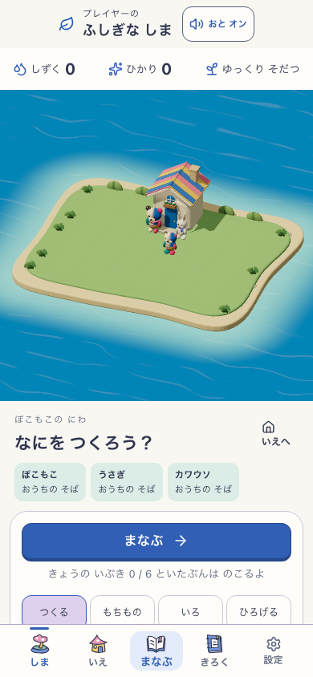

WI-A / WHOLE ISLAND
入り江を囲む、森と港の島
入り江を軸に、森の集落・花の庭・水辺の街区が曲線でつながる。
WHOLE ISLAND / ART BEFORE IMPLEMENTATION
岸も、水も、森も、庭も、街も。
暮らせる場所がつながって、島の大きな姿が変わる。
比較の対象は島全体。3方向それぞれの「初期→発展途中→成熟」を、美術で先に見比べます。
THREE WHOLE-WORLD DIRECTIONS
GROW TOGETHER
岸と土地丸い岸・入り江・低い段・地区の広がり。
水と道流れ・岸・橋・通れる余白がつながる。
森と庭根・樹冠・群落が大きな居場所を作る。
家と街区家の形、足元、広場と屋根の群れが育つ。
暮らしと不思議住人が行き来し、複数の場所が関係する。
幻想性は、島の形・尺度・空間・つながりで作る。昼の全景で入りたくなることを判断する。
EARLY → DEVELOPING → MATURE
WI-A / WHOLE ISLAND
入り江を軸に、森の集落・花の庭・水辺の街区が曲線でつながる。
WI-B / WHOLE ISLAND
低い丘と一本の水の流れに沿って、木陰・庭園・広場・家並みが育つ。
WI-C / WHOLE ISLAND
森・花・水辺の地区がそれぞれ大きな場所になり、家並みと共有の広場が島全体をつなぐ。
KEEP THE ORIGINAL CHARM

生成の住人や家の細部を、そのまま既存モデルとの一致と認定しない。3画像の岸・カメラ・固定物にもずれがあり、最終基準版で揃える。
64PX / 島全体の大形
9〜12戸などプロンプト中の個数は例示で、ゲームの上限や閾値ではありません。生成画像は原画候補。学習・実アプリ・保存・公開は変更していません。
制作記録 · 3方向のプロンプト · Cの構図修正プロンプト